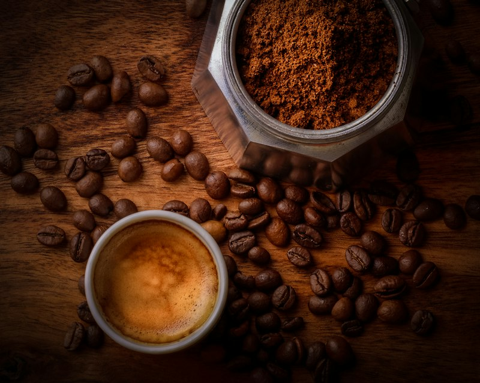

Espresso
A concentrated coffee made by forcing hot water through finely ground beans under pressure. It is the base of many coffee drinks.
- Ingredients
- Finely ground beans and hot water
- Temperature
- Hot
- Taste
- Rich, intense, and bitter
- Coffee strength
- Very strong